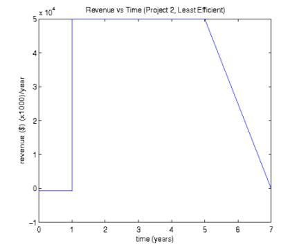
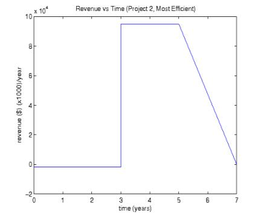

Thoughts on Software Development Efficiency vs ?
Much is written on the Efficiency-Readability issue in software development. Hardly a week or two goes by that I don't see an argument break out in a slashdot thread. So which is it? It depends. Really. Many of the discussions I read just don't take into consideration the type of problem being solved. A little bit of thought about this before hand will obviously make a big difference. But I think we can do even better. With a little research and analysis, it should be possible to quantify how much effort should be spent on efficiency. Instead of "make it fast" or "get it done quickly", we can learn ahead of time the amount of talent needed, what code to spend time worrying about, development time and understand how all this effects earnings.
Efficiency tradeoffs may sacrifice the rigid development time constraints, readability, maintainability, correctness, and completeness. For simplicity I will only consider efficiency and development time; although, there is no reason a more thorough model might not incorporate some of the other considerations.
The Model
Ok, so here's my case study and very naive model. (I'm not going for accuracy here, just enlightenment.) These are somewhat extreme examples, but almost certainly there exist development scenarios that lie middle of the spectrum.
Case 1:
You're the manager of a five person (and you) web development team.
Your analysis shows that, at best, you can move the project to the
maintenance stage within one year by completely ignoring efficiency and
focus entirely on development speed. Very careful design and tweaking
of the algorithms will yield a three year development life cycle.
Because the product is a service (yearly subscription), your company is expecting a fairly
constant level of revenue for many years to come. The development
costs are ($):
| 50k | - | equipment and space |
| 150k/year | - | manager |
| 100k/year | - | developers |
| 1.5k | - | servers |
With an optimized code base, you estimate a need for only three servers. Otherwise, it will take 100 servers. A review of similar technologies results in the graphs below. Top, left is revenue by year for a single year of development. Top, right is revenue for a three year development plan. The bottom row is total revenue, obtained by integrating the top two graphs. It should be clear at this point that 10 years out, we do much better by purchasing the extra 97 servers and completing development as soon as possible. This outcome is a result of selling a service that is expected to be profitable well after the work is finished. Revenue is not dependent on the cost of making a physical device. Note that this model doesn't take into account maintenance and assumes little competition.
Case 2:
Once again you are the manager on a five person team. This time the
project is an embedded device. The technology that makes this device
commercially feasible has only recently been developed. You expect
within five years time, it will be replaced with something better.
But in the mean time, any organization willing to take the risk can
expect a high profit margin per device. Here are the numbers ($).
| 50k | - | equipment and space |
| 150k/year | - | manager |
| 100k/year | - | developers |
| 50/device - (1 year plan) | - | cpu |
| 5/device - (3 year plan) | - | cpu |
A myriad of embedded devices of all costs and capabilities are available to choose from. With only one year to develop, the cost of the devices will eat away a considerable portion of the net profits. You start off selling one million device per year for 3 years at $100. Over the next two years the demand will drop to virtually nothing at which point the product is discontinued. This time, it is worth the extra money and time spent. The dependency of income on hardware costs provides an incentive to save cycles.


A few more considerations
When evaluating the potential success of a software project, programmer satisfaction, user base, and competition should all be factored into your model. Competition is obvious.
Just keep in mind that although development time effects competitiveness, it's probably not a linear thing. Releasing a product one month later than a competitor instead of one month earlier might be the difference between 90% market share and 10%.
How important is the correctness and completeness of your product? If it's not 100% finished and there are lots of bugs, will you lose 5% of your customers? 10%? 80%? In some cases, you may find that some loss is acceptable. Even though Bob just lost an hour of work because you had to get your software out the door as soon as possible, is it possible he is still better off than if he had to do it by hand? Bob won't agree to this (and I probably won't either). But if you have no competitors, you may still be doing many people a favor by making the software available early. (Note that if the source is open and useful, the bugs will get fixed one way or another.)
A happy programmer is a productive programmer. Just because your analysis shows that no higher level thinking is necessary to get your e-commerce site up and running, doesn't mean you can turn your coders into assembly line workers. Programmers like to be clever, solve hard problems, do good work. If there is no thought involved, you will end up with an inferior product and it may even take longer than if you let them do "unnecessary" work. Then again, you might just look for less talented programmers.
Other Questions
I have one more for you. And I'm sure you have some of your own. Have you ever learned about an API or built-in function of a language only after spending needless time re-inventing said feature? Have you ever spent lots of time learning features you almost never use? I tend to lean towards the first. (It does have the advantage that you really know what you're doing once you find the built-in feature.) But often I wish I had spent some time reading over the APIs. On the other hand, there are many quite extensive APIs out there and no one has time to go over them all. In fact I doubt this is even possible given the rate at which they are produced. So here we find another tradeoff, how much time to devote to learning, and how much to working. Build your own model. Remember to factor in the type of work, level of difficulty, API learning curves, etc.